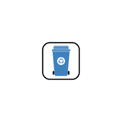
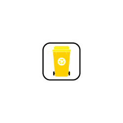
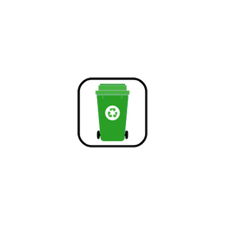

PAPEL
Reciclável
- Cadernos
- Jornais
- Revista
- Panfletos
- Caixas de papelão
- Papel de desenho
Não Reciclável
- Papel vegetal
- Papéis encerados
- Fotografias
- Papel de carbono
- Papéis sanitário usado

METAL
Reciclável
- Fio de cobre
- Arame
- Alumínio
- Latas de refrigerante
- Latas de alimentos
Não Reciclável
- Lata de tinta
- Metais misto
- Computadores
- Esponja de aço
- Latas de combustível
PLÁSTICO
Reciclável
- Garrafa Pet
- Sacolas plásticas
- Tampas de garrafa
- Filme plástico
- Embalagens de alimentos
Não Reciclável
- Isopor
- Brinquedos de plástico
- Plástico tratados
- Plástico misto
- Cabos de panelas

VIDRO
Reciclável
- Garrafas de bebidas
- Potes de vidro
- Cacos de vidro
Não Reciclável
- Espelhos
- Lâmpadas
- Vidro temperados
- Frascos de vidro
- Cristais
- Vidro cerâmico